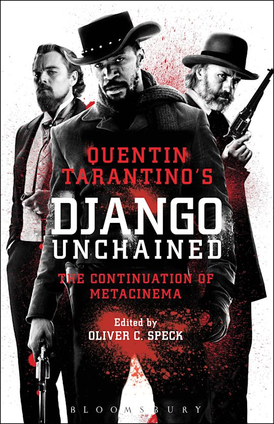
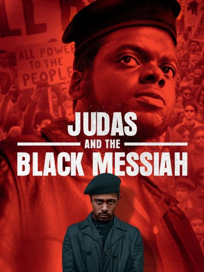
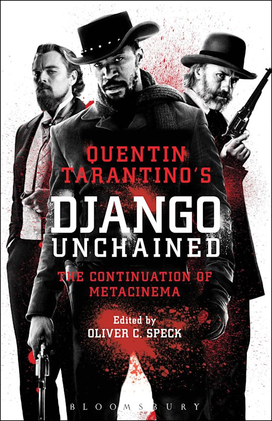
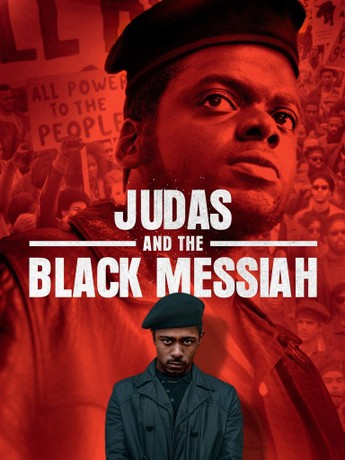

Genre: Horror Runtime: 2hrs 17mins Rating:
Synopsis: Set in 1932 in the Mississippi Delta, twin brothers Elijah “Smoke” Moore and Elias “Stack” Moore return to their hometown of Clarksdale after years away in Chicago. They’ve earned money working for the mob and now aim to invest it in something new: buying a disused sawmill and turning it into a juke joint for the local Black community.Through this genre-defying mix of Southern Gothic, supernatural horror and musical drama, the film explores themes of art, community, trauma, exploitation, and what it means to come home.

Genre: Western Runtime: 2hrs 45mins Rating:
Synopsis: Two years before the Civil War, Django (Jamie Foxx), a slave, finds himself accompanying an unorthodox German bounty hunter named Dr. King Schultz (Christoph Waltz) on a mission to capture the vicious Brittle brothers. Their mission successful, Schultz frees Django, and together they hunt the South's most-wanted criminals. Their travels take them to the infamous plantation of shady Calvin Candie (Leonardo DiCaprio), where Django's long-lost wife (Kerry Washington) is still a slave.
Genre: Drama Runtime: 2hrs 6mins Rating:
Synopsis: Judas and the Black Messiah is a 2021 biographical drama about the betrayal of Black Panther Party chairman Fred Hampton by FBI informant William O'Neal. The film, starring Daniel Kaluuya as Hampton and LaKeith Stanfield as O'Neal, depicts Hampton's rise as a revolutionary leader in Chicago and O'Neal's role as he infiltrates the party on behalf of the FBI, ultimately leading to Hampton's assassination in a 1969 raid.